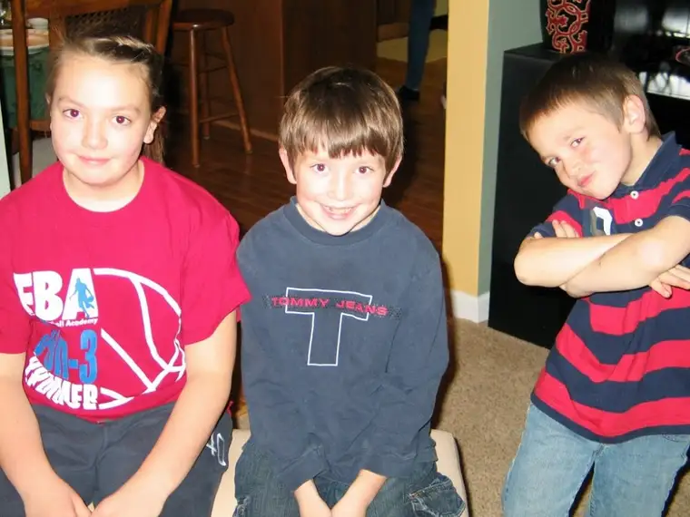

Coming off a holiday weekend, it’s a little hard knowing where to focus my Monday thoughts. So much has happened.
 |
| The youngest Salonens giving their best Thanksgiving pose |
I could write about my daughter’s first attempt at apple pie with Grandma, or the layered Asian dip we made together.

{kind=link}
{kind=link}
{kind=link}
I could write about my favorite part of the weekend — when my son Adam crawled up into my lap and fell asleep.
{kind=link}
We had a mini Christmas with the Salonen side, so I could write a little about that, too. The book my son got as a gag gift, for instance (Miss Manners: Guide to Excruciatingly Correct Behavior…National Bestseller???).
{kind=link}
Or the purply moment when oldest daughter opened up her Justin Bieber perfume.
{kind=link}
But there’s something else rising above…something that was hidden in last week’s busyness. Our 20th wedding anniversary. This is a photo of a photo so not the best, but here we were on November 23, 1991.
{kind=link}
And here we are November 24, 2011, the day after we celebrated two decades of married life.
{kind=link}
This does feel like a victory to me. We’ve been through a lot in that time. We met when we were 18, married at 23. We’ve had 20 years to work out the immaturity we both brought into the marriage, and at 43, we’re getting closer. We’ve brought five live children into the world, and experienced the death of one in miscarriage. There have been a fair amount of ups and downs.
But when the dust of the past 20 years settles, some shining treasures glimmer, and I want to share one of them today.
This weekend, Troy and I wrote letters to one another. We chose a topic and wrote in separate spheres, then swapped letters. The topic: What is your favorite memory of our wedding day? Amazingly, we both chose the very same memory.
The wedding dance wasn’t quite over, but we were exhausted, so we sneaked away to have a bite to eat at a nearby fast-food restaurant, Hardees, located just a few blocks from where we live now. I remember feeling relieved, because as much as I loved being surrounded by family and friends, the pressure was off. It was just the two of us.
Or at least I thought. I wasn’t prepared for the gazes of the few patrons and workers that greeted us. I hadn’t planned on their smiles and their desire to chat with us about marriage. Without realizing it as we opened the doors to the restaurant, our mere presence was something of a testimony to the strangers we were encountering.
It’s a memory that, for both of us, signaled the moment when we were finally together, just the two of us, as a married couple. Additionally, in hindsight I see it as a moment when I realized the power of marriage; how important it is to be a visible sign of the sacrament. In a time when marriage is being less regarded as sacred, it’s more important than ever that the world sees signs of hope through marriages that, while not perfect, have pushed through some truly shaky moments to get to the other side and stand as a witness of perseverance.
I’m going to end with a paragraph in Troy’s letter that stood out to me, even caused me to laugh out loud at the recognition of truth: “I’m sure it was quite a sight to see the bride and groom in a fast-food restaurant on their wedding day. It’s kind of funny, but that really is who we are, still to this day; just a couple trying to make it through the busy day, not spending too much money, and just enjoying the simple things in life. We’ve come a long way, but in the lot of ways we’re still exactly the same.”
Twenty years, and so much changed but so much still the same. I take comfort in that.
Q4U: What is your favorite memory of your wedding day, or another celebration of significance?
{kind=link}